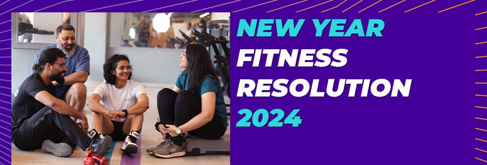
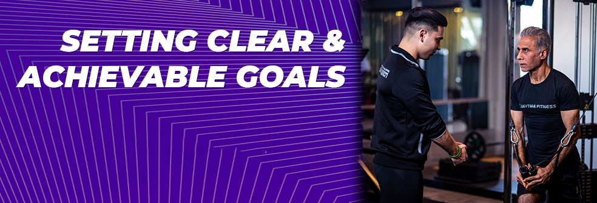
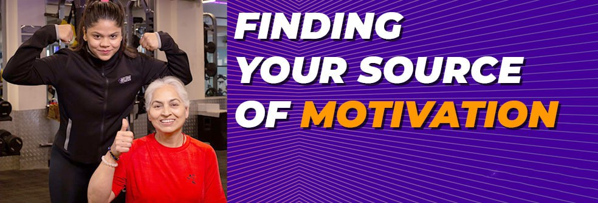
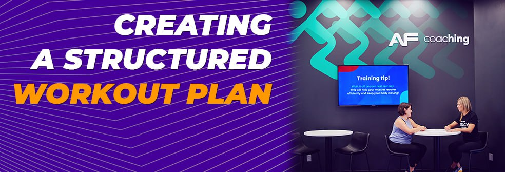

New Year Fitness Resolution 2024: How To Stay Consistent

Let me paint you a picture, it is New Year’s Eve, you are partying your heart out. You are committed and have made a long list of New Year Fitness Resolutions 2024 like:
I will go to the gym everyday.
No junk food will be allowed in my home.
Starting tomorrow, I will drink 2 litres of water every day.
As the countdown begins for the New Year, many individuals are preparing to embark on a journey towards a healthier lifestyle by setting their New Year fitness resolution.
While the enthusiasm is high at the outset, the challenge lies not just in setting these New Year fitness goals but in maintaining the dedication and consistency required to achieve those New Year fitness resolutions over the course of 2024.
While your dedication and motivation may be in place, factors like the poor quality of air, i.e. effect of air pollution, commuting issues, poor time management, stress, or even an impending list of tasks may hinder you from achieving the fitness goals set by you.
Defining Fitness Resolution: A New Year fitness resolution isn’t merely a goal but a commitment to making positive changes for overall well-being. It signifies a conscious decision to prioritize health and fitness in one’s life by establishing the right kind of New Year fitness goals.
The Importance of Motivation and Consistency: The initial spark of motivation propels individuals to set New Year fitness goals. However, it’s the unwavering consistency that allows these aspirations to materialize into sustainable habits and long-term achievements.
Setting clear objectives from the start is fundamental. The term “fitness resolution” isn’t just about hitting the gym ten times in January; it’s about integrating fitness as a part of daily life at least 10 times each month, ensuring it becomes a routine rather than a temporary effort. This not only helps us build a habit of working out but also helps us achieve those New Year fitness resolutions 2024.
Setting Clear and Achievable Goals for New Year Resolution

- SMART Goals: Employing the SMART criteria (Specific, Measurable, Attainable, Relevant, Time-bound) is a proven strategy for creating 2024 fitness resolutions that are both realistic and achievable. For instance, aiming to exercise four times a week or completing a certain number of kilometers in a month can be tangible and measurable targets.
- Breaking Down Long-Term Goals: Dividing ambitious New Year fitness goals into smaller, manageable milestones is key. For example, if the ultimate goal is to lose a specific amount of weight by the year-end, breaking it down into monthly or quarterly targets makes it less daunting and more achievable.
Finding Your Source of Motivation for New Year Goal

- Identifying Personal Reasons: Understanding the intrinsic motivations behind New Year fitness resolution strengthens commitment. Whether it’s reclaiming health, boosting confidence, or fostering a sense of accomplishment, acknowledging these reasons and understanding the psychology of motivation behind our goals reinforces dedication and commitment.
- Creating a Vision Board:Visualization techniques, like creating a vision board with images and quotes that resonate with 2024 fitness goals, serve as constant reminders. They help to stay focused and driven, especially during moments when motivation wanes.
Creating a Structured Workout Plan for 2024 fitness Resolution

- Tailoring Your Exercise Routine:Crafting an exercise regimen that aligns with personal preferences and interests enhances adherence to New Year fitness resolution. Enjoying the chosen workouts makes it less likely to be perceived as a chore and more as an enjoyable activity.
- Balancing Workouts:Incorporating a well-rounded mix of cardio, strength training, and flexibility exercises aligns with 2024 fitness goals of holistic well-being. This diversity not only prevents monotony but also ensures comprehensive fitness development.
The Conclusion
Setting a New Year fitness resolution marks, the beginning of a journey towards improved health and well-being. However, the true success lies in maintaining consistency and dedication throughout 2024.
By defining clear 2024 fitness goals, understanding personal motivations, structuring a workout plan, and celebrating achievements, individuals can overcome challenges and embrace the rewards of a healthier lifestyle. Remember, it’s not about the intensity of efforts at the start, but the consistency in integrating fitness into everyday life at least 10 times each month that ultimately leads to sustainable changes.